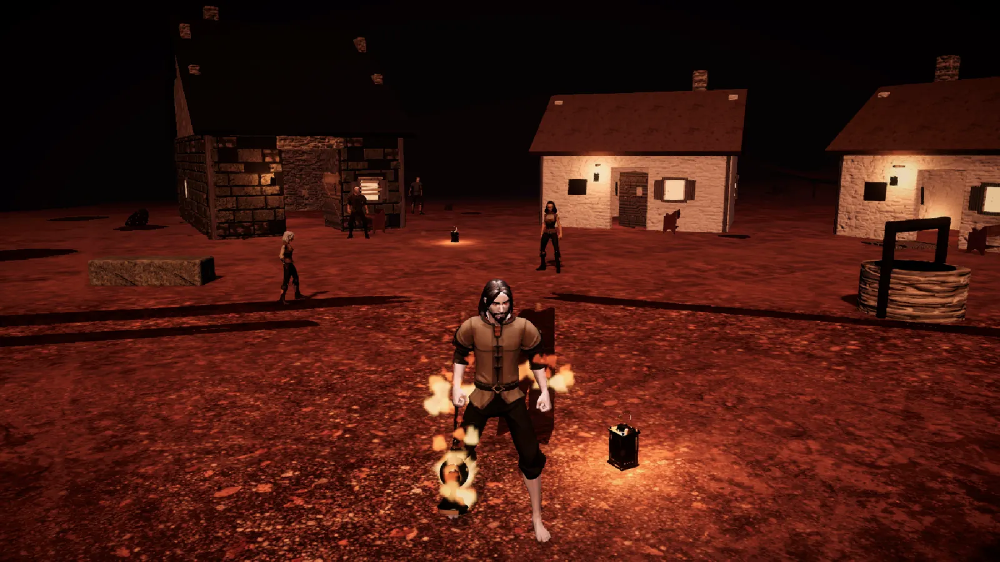
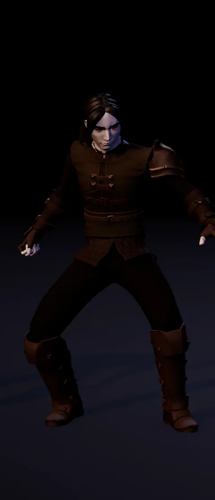
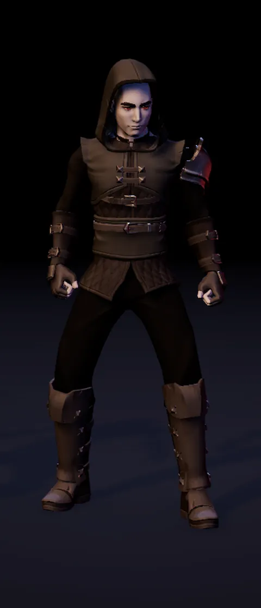
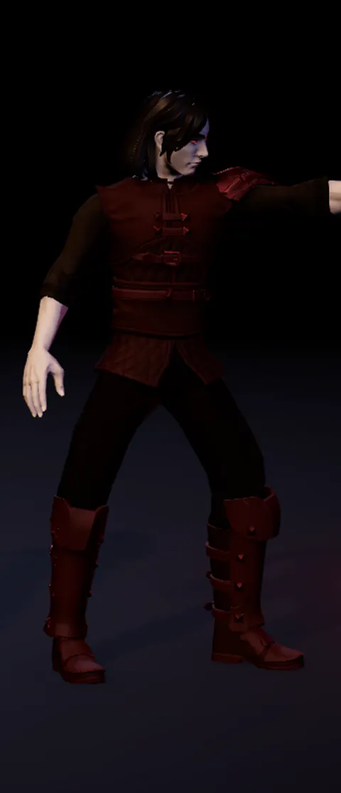
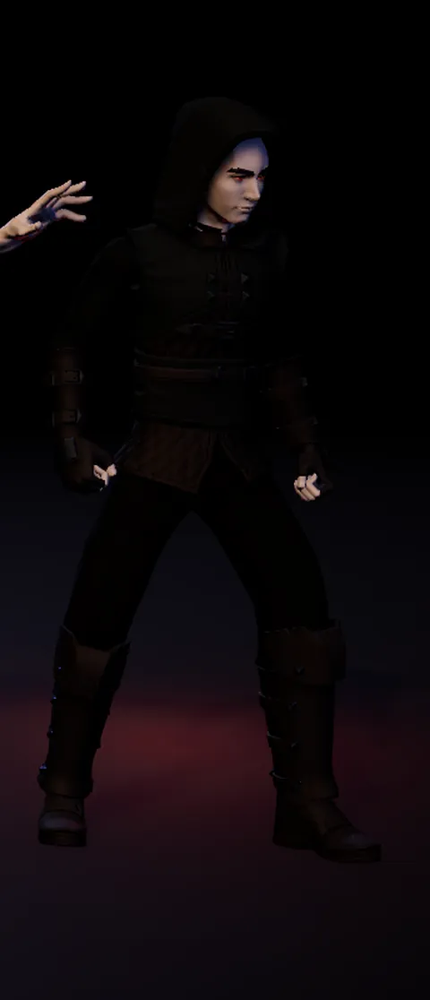
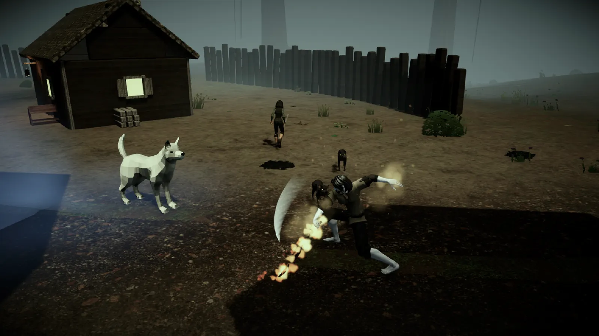
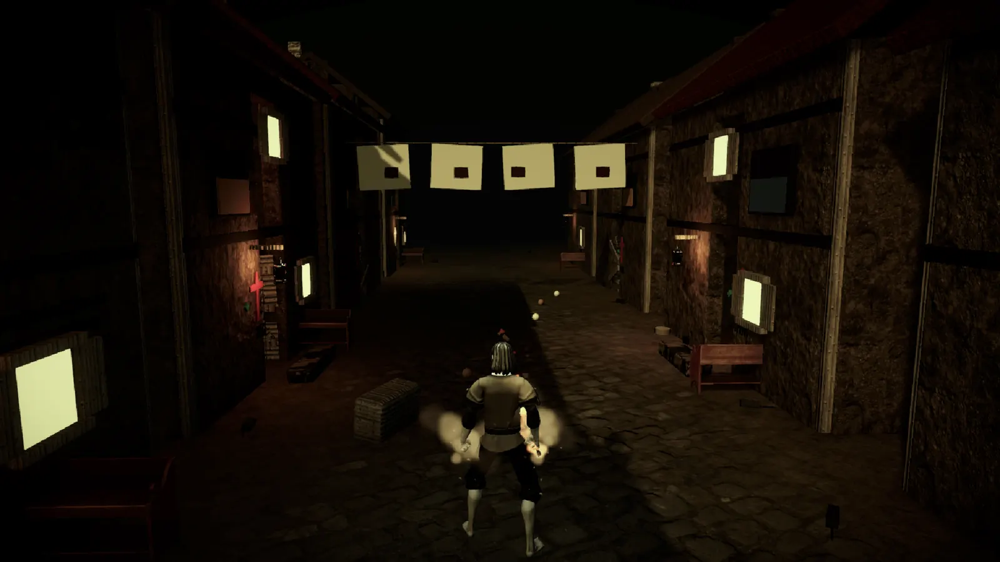
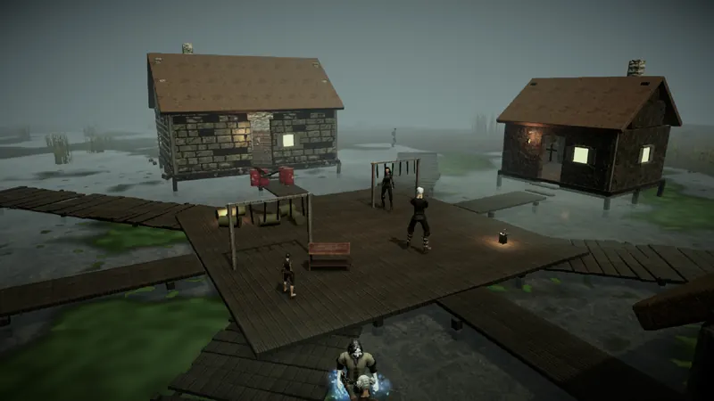
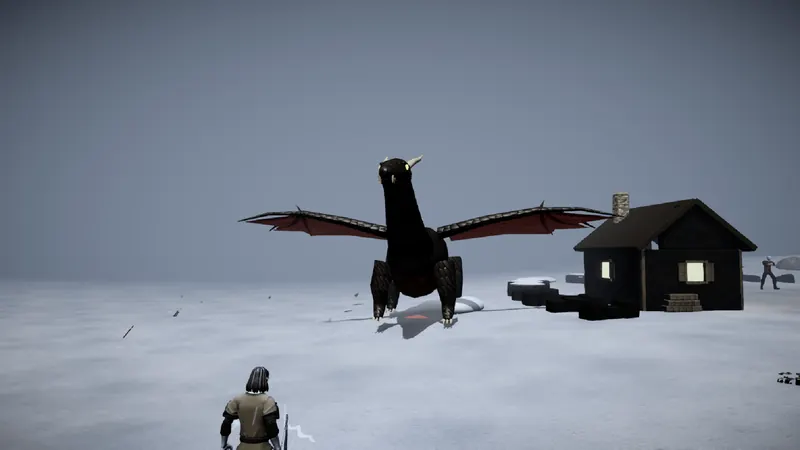
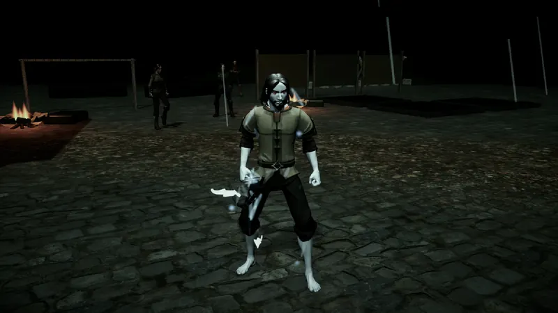

Elias era um homem comum de Vésper, ao pé dos Cárpatos. Morreu numa vala do Mosteiro de São Lázaro, com as marcas negras da peste no pescoço. No último suspiro, Kazimir, o vampiro mais medonho que já existiu, o mordeu e o deitou num velho sarcófago de madeira.
Três noites depois, Elias desperta com terra na boca, uma sede terrível e um elemento novo ardendo no sangue. Lá fora, os mortos da vala comum estão se levantando. E a peste tem um senhor: o Conde Drácula, que espalha a doença com os seus ratos para erguer um exército com os mortos.

Escolha o seu clã
Antes da peste, Elias foi soldado, caçador, alquimista ou ladrão. Cada clã domina um elemento, e as armas encantadas queimam, eletrocutam, afogam ou soterram quem apanha.
-

Guerreiro
Clã da Pedra, terra
Corpo a corpo e aguenta pancada. A areia corre pelas mãos e cada golpe abala o inimigo.
-

Arqueiro
Clã da Revoada, ar
Ataca de longe e não para no lugar. Pequenos raios estalam em volta do corpo.
-

Mago
Clã da Brasa, fogo
Dano alto em área e pouca defesa. As mãos ardem, e quem apanha continua queimando.
-

Assassino
Clã da Maré, água
Mata um alvo de cada vez, rápido e escondido. A água envolve as mãos e gela o inimigo.

Dez regiões até o Drácula
Do mosteiro onde Elias desperta até o castelo nos Cárpatos: pântanos, florestas, cidades tomadas pela peste, palácios de velas e a cidadela do inverno eterno. Cada região tem o seu chefão vampiro.




Como jogar
No computador
| W A S D | Andar |
| J ou Espaço | Atacar, falar e morder |
| Shift ou K | Esquivar rolando |
| 1 a 4 | Poderes |
| Q | Beber o frasco de sangue |
| I ou Tab | Bolsa e equipamento |
| P | Árvore de Sangue |
| M | Mapa |
Também dá para clicar nos botões da tela com o mouse. Na primeira vez o jogo demora para carregar; depois o navegador guarda os arquivos e abre mais rápido.
No Android
- Abra esta página no celular e toque em Baixar para Android.
- Toque no arquivo baixado. O Android pede para permitir "instalar apps desconhecidos" pelo navegador; permita.
- Se o Play Protect avisar que o app é desconhecido, toque em "Instalar mesmo assim". É uma versão de teste, fora da Play Store.
- Para atualizar, baixe a versão nova e instale por cima. A campanha continua de onde parou.
Precisa de Android 8 ou mais novo, de 64 bits; recomendado 4 GB de RAM. Se o celular esquentar, em Configurações escolha gráficos Baixo e 30 quadros por segundo.